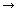

Module 8—Acid-Base Equilibrium
 Explore
Explore
 Read
Read
Read the first paragraph of “Predicting Acid-Base Reaction Equilibria” on page 727 of the textbook.
Empirical data is necessary to develop general trends about the tendency of acids and bases to transfer protons. Review the “Relative Strengths of Acids and Bases at 298.15 K” table located on pages 8 and 9 of the Chemistry Data Booklet. This table is also available on page 829 of the textbook. A few points about the structure of this table in the Chemistry Data Booklet are as follows:
- Columns 1 and 2 list the name and chemical formula for acids. Column 3 contains the chemical formula of the conjugate base for the acid shown in each row.
- Acids are listed by decreasing strength. For example, perchloric acid is a stronger acid than citric acid; as a result, citric acid is listed further down the table.
- The acids listed above the shaded hydronium ion row are strong acids; acids listed below the hydronium ion row are weak acids.
- Bases are listed by increasing strength, with the strongest base being hydroxide. The remaining substances listed in the conjugate base column are weak bases and are listed by increasing strength. For example, the perchlorate ion, ClO4–(aq), is the weakest base on the table. Substances listed below the perchlorate ion demonstrate increasing strength as bases.
 Try This
Try This
Predicting Acid-Base Reactions
Earlier in this course you used the “Table of Selected Standard Electrode Potentials,” found on page 7 of the Chemistry Data Booklet, to predict and analyze reduction-oxidation reactions. Can the “Relative Strengths of Acids and Bases at 298.15 K” table be used to predict acid-base reactions in a similar way? Read “Lab Exercise 16.B” on page 727 of the textbook to test this possibility.
In “Lab Exercise 16.B,” examine the positions of the substances involved in reactions 1–6. Note the position of the equilibrium for each of these reactions. Comment on any general trends you see.
Save your comments in your course folder and submit a copy to your teacher for feedback.
Read
Read “Predicting Acid-Base Reactions” on pages 728–731 of the textbook to confirm the trends you may have observed in “Lab Exercise 16.B.”
Predicting the equilibrium position for acid-base reactions involves identifying reacting species and their positions on the “Relative Strengths of Acids and Bases at 298.15 K” table with greater specificity than when you predicted redox reactions.
To successfully predict acid-base reactions, you must list the reaction substances. Already in this module you have learned that the extent to which strong and weak acids react with water differs. With this in mind, what is the most appropriate way to list the species present in a solution of hydrochloric acid?
The following chart summarizes the way substances should be considered when predicting acid-base reactions and the reason for each guideline:
Listing for Substance |
Reason |
All strong acids are written as H3O+(aq). |
Strong acids ionize 100% in aqueous solution; therefore, unionized acid particles are not present except at extremely low concentrations. |
Strong bases (hydroxides) are listed as |
Ionic hydroxide compounds will dissociate to produce OH–(aq). |
Ionic compounds are listed as dissociated ions. |
Ionic compounds dissociate to some extent in water. |
Molecular substances are written in their molecular form; this includes weak acids and weak bases. |
The extent of reaction with water is uncertain; therefore, substances are listed in a unionized form. |
Metallic ions may be omitted from consideration as possible reactants. |
Metallic ions do not have a proton to donate and they do not demonstrate the ability to accept a proton during a chemical reaction. |
 Self-Check
Self-Check
SC 1. Complete the following chart, which lists the equilibrium position for reactions occurring between substances shown on the “Relative Strengths of Acids and Bases at 298.15 K” table.
Reactants/Position of Reactants |
Description of Equilibrium Position |
Symbol Used |
Hydronium and Hydroxide |
|
|
Acid Above Base |
|
|
Base Above Acid |
|
|
Self-Check Answers
Contact your teacher if your answers vary significantly from the answers provided here.
SC 1.
Reactants/Position of Reactants |
Description of Equilibrium Position |
Symbol Used |
Hydronium and Hydroxide |
quantitative |
 |
Acid Above Base |
products favoured (greater than 50%) |
|
Base Above Acid |
reactants favoured (less than 50%) |